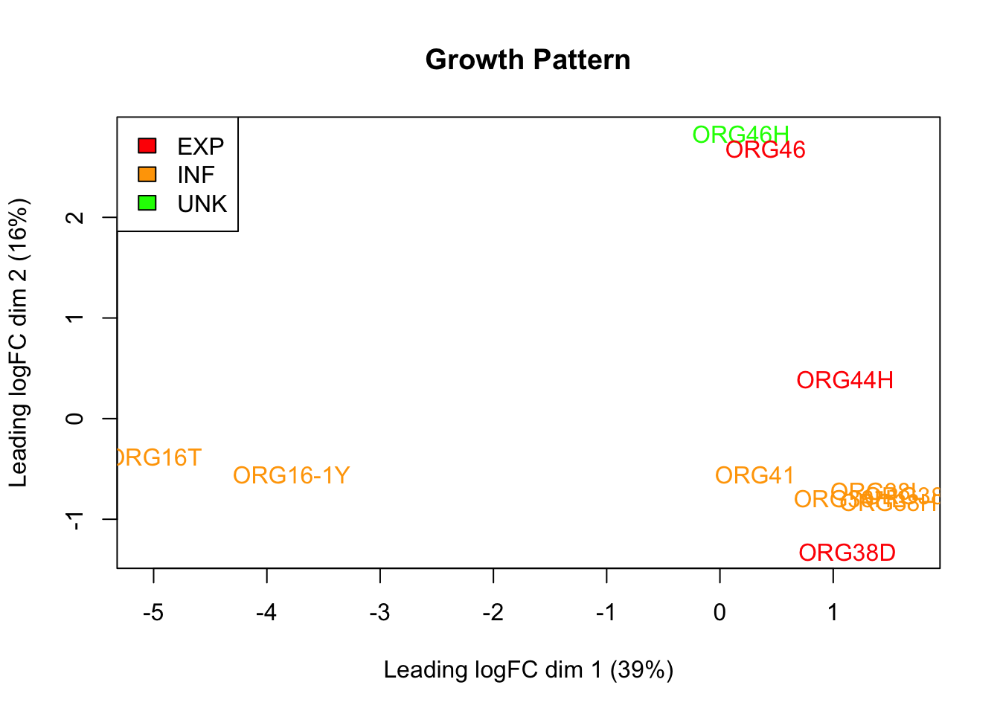

Last updated: 2024-07-02
Checks: 7 0
Knit directory: drug-AUC-analysis/
This reproducible R Markdown analysis was created with workflowr (version 1.7.1). The Checks tab describes the reproducibility checks that were applied when the results were created. The Past versions tab lists the development history.
Great! Since the R Markdown file has been committed to the Git repository, you know the exact version of the code that produced these results.
Great job! The global environment was empty. Objects defined in the global environment can affect the analysis in your R Markdown file in unknown ways. For reproduciblity it’s best to always run the code in an empty environment.
The command set.seed(20240628) was run prior to running
the code in the R Markdown file. Setting a seed ensures that any results
that rely on randomness, e.g. subsampling or permutations, are
reproducible.
Great job! Recording the operating system, R version, and package versions is critical for reproducibility.
Nice! There were no cached chunks for this analysis, so you can be confident that you successfully produced the results during this run.
Great job! Using relative paths to the files within your workflowr project makes it easier to run your code on other machines.
Great! You are using Git for version control. Tracking code development and connecting the code version to the results is critical for reproducibility.
The results in this page were generated with repository version b45ef44. See the Past versions tab to see a history of the changes made to the R Markdown and HTML files.
Note that you need to be careful to ensure that all relevant files for
the analysis have been committed to Git prior to generating the results
(you can use wflow_publish or
wflow_git_commit). workflowr only checks the R Markdown
file, but you know if there are other scripts or data files that it
depends on. Below is the status of the Git repository when the results
were generated:
Ignored files:
Ignored: .Rhistory
Ignored: .Rproj.user/
Note that any generated files, e.g. HTML, png, CSS, etc., are not included in this status report because it is ok for generated content to have uncommitted changes.
These are the previous versions of the repository in which changes were
made to the R Markdown (analysis/MDSplots.Rmd) and HTML
(docs/MDSplots.html) files. If you’ve configured a remote
Git repository (see ?wflow_git_remote), click on the
hyperlinks in the table below to view the files as they were in that
past version.
| File | Version | Author | Date | Message |
|---|---|---|---|---|
| Rmd | b45ef44 | kitadalvi | 2024-07-02 | Added design matrix code |
| html | b45ef44 | kitadalvi | 2024-07-02 | Added design matrix code |
| Rmd | 4720d95 | kitadalvi | 2024-06-28 | added MDS plots |
| html | 4720d95 | kitadalvi | 2024-06-28 | added MDS plots |
| Rmd | 00b4ad0 | kitadalvi | 2024-06-28 | naming plots |
| html | 00b4ad0 | kitadalvi | 2024-06-28 | naming plots |
| html | a25120e | kitadalvi | 2024-06-28 | Build site. |
| Rmd | 9c721b6 | kitadalvi | 2024-06-28 | initial commit |
| html | 9c721b6 | kitadalvi | 2024-06-28 | initial commit |
library(edgeR)Loading required package: limma#loading in count data
countdata <- read.delim("/Users/dalvinikita/Documents/Drug Response Analysis/countsmatrix.tsv", check.names = FALSE, stringsAsFactors = FALSE)Checking the count data:
head(countdata) Gene ORG.38.HANS ORG.38.HANS.LIGHT ORG.38.ORG ORG.38.ORG.DARK
1 1 5S_rRNA.1 1 0 0 0
2 2 5S_rRNA.100 0 0 0 2
3 3 5S_rRNA.103 0 0 0 0
4 4 5S_rRNA.105 0 0 1 1
5 5 5S_rRNA.106 0 0 0 0
6 6 5S_rRNA.110 0 0 1 1
ORG.38.ORG.LIGHT ORG.41 ORG49 ORG60 ORG66 ORG71 ORG73 ORG73R
1 0 0 0 1 0 1 0 2
2 0 0 0 0 0 0 0 0
3 0 1 0 0 0 0 0 0
4 1 1 1 0 0 1 0 0
5 0 0 0 0 0 0 0 0
6 1 0 0 0 0 0 0 0Loading in the sample metadata:
sampleinfo <- read.delim("/Users/dalvinikita/Documents/Drug Response Analysis/SampleInfo.txt", check.names=FALSE, stringsAsFactors = TRUE)
#assigning "Batch information as a character/factor instead of integer
sampleinfo$Batch<- as.character(sampleinfo$Batch)
sampleinfo$Batch<- factor(c(sampleinfo$Batch))Checking the sample metadata:
head(sampleinfo) Sample ID Type PATIENT PATTERN Batch Media Mitomycin Doxorubicin
1 ORG-38-HANS ORG ORG38 INF 1 HANS 156.1 141.20
2 ORG-38-HANS-LIGHT ORG ORG38 INF 1 HANS 156.1 141.20
3 ORG-38-ORG ORG ORG38 INF 1 ORG 156.1 141.20
4 ORG-38-ORG-DARK ORG ORG38 INF 1 ORG 156.1 141.20
5 ORG-38-ORG-LIGHT ORG ORG38 INF 1 ORG 156.1 141.20
6 ORG41 ORG ORG41 EXP 1 ORG 80.1 99.32
Staurosporine Topotecan Irinotecan Oxaliplatin Gemcitabine Carboplatin
1 35.09 118.10 198.4 223.8 155.10 256.8
2 35.09 118.10 198.4 223.8 155.10 256.8
3 35.09 118.10 198.4 223.8 155.10 256.8
4 35.09 118.10 198.4 223.8 155.10 256.8
5 35.09 118.10 198.4 223.8 155.10 256.8
6 16.83 44.23 165.9 225.3 76.88 250.0
Docetaxel Cisplatin Paclitaxel Cetxuimab
1 155.2 205.1 157.3 115.6
2 155.2 205.1 157.3 115.6
3 155.2 205.1 157.3 115.6
4 155.2 205.1 157.3 115.6
5 155.2 205.1 157.3 115.6
6 101.2 190.2 103.1 96.4Putting data it a DGElist object:
y <- DGEList(counts=countdata[,3:14], genes = countdata[,2])
head(y)An object of class "DGEList"
$counts
ORG.38.HANS ORG.38.HANS.LIGHT ORG.38.ORG ORG.38.ORG.DARK ORG.38.ORG.LIGHT
1 1 0 0 0 0
2 0 0 0 2 0
3 0 0 0 0 0
4 0 0 1 1 1
5 0 0 0 0 0
6 0 0 1 1 1
ORG.41 ORG49 ORG60 ORG66 ORG71 ORG73 ORG73R
1 0 0 1 0 1 0 2
2 0 0 0 0 0 0 0
3 1 0 0 0 0 0 0
4 1 1 0 0 1 0 0
5 0 0 0 0 0 0 0
6 0 0 0 0 0 0 0
$samples
group lib.size norm.factors
ORG.38.HANS 1 6282509 1
ORG.38.HANS.LIGHT 1 7730859 1
ORG.38.ORG 1 7305685 1
ORG.38.ORG.DARK 1 6475311 1
ORG.38.ORG.LIGHT 1 6427557 1
7 more rows ...
$genes
genes
1 5S_rRNA.1
2 5S_rRNA.100
3 5S_rRNA.103
4 5S_rRNA.105
5 5S_rRNA.106
6 5S_rRNA.110Setting up columns to colour code MDS plots based on patient, growth pattern, batch, and media:
#assigning colours for MDS plots based on patient, growth patters, batch, and media
col.patient <-c("red", "orange", "yellow","lightgreen", "lightblue", "purple", "magenta")[sampleinfo$PATIENT]
col.pattern <-c("red", "orange", "green")[sampleinfo$PATTERN]
col.batch <-c("red", "orange", "green")[sampleinfo$Batch]
col.media <- c("red", "orange")[sampleinfo$Media]Generating plots:
| Version | Author | Date |
|---|---|---|
| 9c721b6 | kitadalvi | 2024-06-28 |
| Version | Author | Date |
|---|---|---|
| 9c721b6 | kitadalvi | 2024-06-28 |
| Version | Author | Date |
|---|---|---|
| 9c721b6 | kitadalvi | 2024-06-28 |
| Version | Author | Date |
|---|---|---|
| 9c721b6 | kitadalvi | 2024-06-28 |
Notes:
• Samples cluster together based on patient from which the sample was taken from, with ORG71 being the most dissimilar
• Samples do not seem to cluster based on growth pattern or media
• Samples show some clustering based on batch - may need to remove ORG71 from this to get a better idea

Notes:
• Tight clustering of samples that were run together in batch 1 (ORG38, ORG41)
• No clustering based on growth pattern
• Factors to include in design matrix: Patient and Batch
#creating design matrix of factors affecting RNA
group <- paste(sampleinfo$PATIENT,sampleinfo$Batch,sep=".")
group <- factor(group)
table(group)group
ORG38.1 ORG41.1 ORG49.2 ORG60.2 ORG66.3 ORG71.3 ORG73.3
5 1 1 1 1 1 2 design <- model.matrix(~0+group)
rownames(design)<- sampleinfo$`Sample ID`
colnames(design)<- levels(group)
design ORG38.1 ORG41.1 ORG49.2 ORG60.2 ORG66.3 ORG71.3 ORG73.3
ORG-38-HANS 1 0 0 0 0 0 0
ORG-38-HANS-LIGHT 1 0 0 0 0 0 0
ORG-38-ORG 1 0 0 0 0 0 0
ORG-38-ORG-DARK 1 0 0 0 0 0 0
ORG-38-ORG-LIGHT 1 0 0 0 0 0 0
ORG41 0 1 0 0 0 0 0
ORG49 0 0 1 0 0 0 0
ORG60 0 0 0 1 0 0 0
ORG66 0 0 0 0 1 0 0
ORG71 0 0 0 0 0 1 0
ORG73 0 0 0 0 0 0 1
ORG73R 0 0 0 0 0 0 1
attr(,"assign")
[1] 1 1 1 1 1 1 1
attr(,"contrasts")
attr(,"contrasts")$group
[1] "contr.treatment"
sessionInfo()R version 4.4.0 (2024-04-24)
Platform: aarch64-apple-darwin20
Running under: macOS Sonoma 14.4.1
Matrix products: default
BLAS: /Library/Frameworks/R.framework/Versions/4.4-arm64/Resources/lib/libRblas.0.dylib
LAPACK: /Library/Frameworks/R.framework/Versions/4.4-arm64/Resources/lib/libRlapack.dylib; LAPACK version 3.12.0
locale:
[1] en_US.UTF-8/en_US.UTF-8/en_US.UTF-8/C/en_US.UTF-8/en_US.UTF-8
time zone: Australia/Melbourne
tzcode source: internal
attached base packages:
[1] stats graphics grDevices utils datasets methods base
other attached packages:
[1] edgeR_4.3.4 limma_3.61.1 workflowr_1.7.1
loaded via a namespace (and not attached):
[1] jsonlite_1.8.8 highr_0.11 compiler_4.4.0 promises_1.3.0
[5] Rcpp_1.0.12 stringr_1.5.1 git2r_0.33.0 callr_3.7.6
[9] later_1.3.2 jquerylib_0.1.4 statmod_1.5.0 yaml_2.3.8
[13] fastmap_1.2.0 lattice_0.22-6 R6_2.5.1 knitr_1.47
[17] tibble_3.2.1 rprojroot_2.0.4 bslib_0.7.0 pillar_1.9.0
[21] rlang_1.1.3 utf8_1.2.4 cachem_1.1.0 stringi_1.8.4
[25] httpuv_1.6.15 xfun_0.44 getPass_0.2-4 fs_1.6.4
[29] sass_0.4.9 cli_3.6.2 magrittr_2.0.3 ps_1.7.6
[33] grid_4.4.0 locfit_1.5-9.9 digest_0.6.35 processx_3.8.4
[37] rstudioapi_0.16.0 lifecycle_1.0.4 vctrs_0.6.5 evaluate_0.23
[41] glue_1.7.0 whisker_0.4.1 fansi_1.0.6 rmarkdown_2.27
[45] httr_1.4.7 tools_4.4.0 pkgconfig_2.0.3 htmltools_0.5.8.1